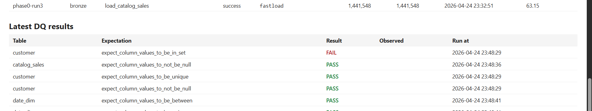
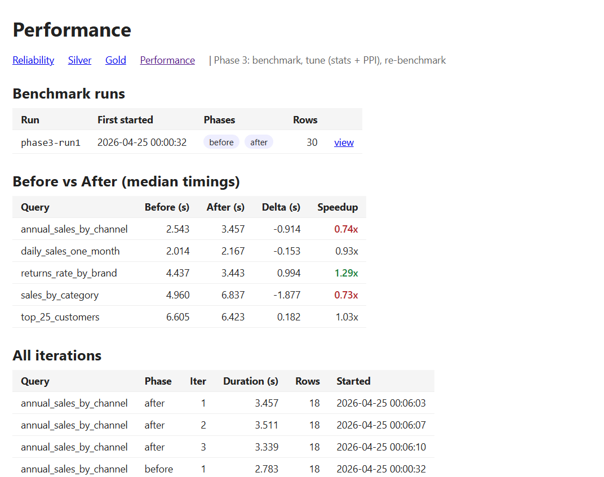

From Bronze to Gold in five sessions — including the parts that didn't work the first time.
Stand up a Teradata data warehouse for a fictitious retailer. CSV files in, BI-ready marts out, a daily SLA of 7 a.m., a Reliability Engineer who wants to see the pipeline status, and a Business Analyst who wants four marts: sales performance, customer 360, product analytics, and channel comparison.
Source data: TPC-DS scale factor 1, the canonical retail benchmark — 25 pipe-delimited files, ~1.2 GB, three sales channels (store, catalog, web), three corresponding returns tables, and a fistful of dimensions. Target: a real Teradata 20 instance.
The first instinct on any Python-to-Teradata pipeline is the same: cursor.executemany("INSERT ... VALUES (?, ?, ?)", chunk) in a loop over pandas.read_csv(chunksize=10_000). It works. It's also genuinely slow.
My first end-to-end Bronze load took just over 17 minutes for ~7.8 M rows across 24 tables (skipping inventory's 11.7 M for the demo). The biggest single file, store_sales.dat (385 MB / 2.88 M rows), accounted for the bulk. Each batch was a parse-prepare-execute round-trip; with ~280 round-trips per fact table over a VM network, that adds up.
Teradata has its own toolbox for bulk loads: FastLoad, MultiLoad, TPump, and TPT (Teradata Parallel Transporter, a meta-tool that drives the others). For a Python project where I'd rather not shell out to a separate CLI, the modern answer is the FastLoad escape that ships with the teradatasql driver itself:
cur.execute("{fn teradata_try_fastload}") # arms the connection
cur.executemany(
"INSERT INTO DW_BRONZE.store_sales (...) VALUES (?, ?, ...)",
rows,
)
But FastLoad has overhead: it opens a separate session, negotiates per-AMP delivery, then commits at end-of-statement. For a 12-row dimension like store, that's all cost and no benefit. So I made the loader pick:
FASTLOAD_MIN_BYTES = int(os.getenv("FASTLOAD_MIN_BYTES", "1000000")) # 1 MB
def pick_tool(path: Path) -> str:
return "fastload" if path.stat().st_size >= FASTLOAD_MIN_BYTES else "executemany"
And — important for the dashboard — the chosen tool is recorded in DW_DQ.run_log.tool alongside the row count and duration. The Reliability Engineer can see at a glance which path each table took.
My first attempt to wire in the picker failed instantly:
[Error 2636] catalog_page must be empty for Fast Loading.
But I had just truncated catalog_page. What gives?
Each call to cur.executemany() with the FastLoad escape opens its own FastLoad session and commits at the end. My loader still called read_csv(chunksize=10_000) and looped over chunks. The first chunk opened a session, inserted 10,000 rows, committed. The second chunk opened a fresh session — and FastLoad's "table must be empty" check now saw 10,000 rows. Boom.
The fix isn't elegant but it's the right one: if the picker says FastLoad, materialize the whole file and call executemany once. For SF1's largest file (store_sales at 2.88 M rows), that's ~700 MB of Python memory — fine on any modern machine. The chunked-streaming path is preserved for the executemany case where it still matters.
After the picker landed:
| Path | Tables | Rows | Time | Avg throughput |
|---|---|---|---|---|
fastload | 13 | 7,804,647 | 325 s | 24,002 rows/sec |
executemany | 11 | 7,689 | 38 s | 201 rows/sec* |
*executemany throughput is dominated by per-table session setup (~3.5 s each) — the rows themselves take milliseconds.
Per-table speedups vs the executemany-only baseline:
store_sales (2.88M rows): ~5–7 min → 84 s (~5–9×)catalog_sales (1.44M): 405 s → 63 s (6.4×)customer_demographics (1.92M): 125 s → 30 s (4.1×)Total Bronze load went from ~17 min to ~6 min, all driven by a 5-line picker.
Silver is where business rules show up. Quantities should be positive, FKs should resolve, dates shouldn't be null. The wrong move is to filter the bad rows out and forget. The right move is to tag them and route them.
Every union of channel facts goes through one intermediate model that adds an _anomaly_reason column:
SELECT
u.*,
CASE
WHEN item_sk IS NULL THEN 'missing_item_sk'
WHEN sale_order_id IS NULL THEN 'missing_order_id'
WHEN sold_date_sk IS NULL THEN 'missing_sold_date'
WHEN quantity IS NOT NULL AND quantity <= 0 THEN 'non_positive_quantity'
WHEN sales_price IS NOT NULL AND sales_price < 0 THEN 'negative_sales_price'
WHEN net_paid IS NOT NULL AND net_paid < 0 THEN 'negative_net_paid'
ELSE NULL
END AS _anomaly_reason
FROM ( /* UNION ALL of stg_store_sales, stg_catalog_sales, stg_web_sales */ ) uThen two models read from the same intermediate:
fact_sales — WHERE _anomaly_reason IS NULLfact_sales__anomalies — WHERE _anomaly_reason IS NOT NULLTPC-DS at SF1 generates a deliberate ~2–3% of dirty rows. Our pipeline tagged exactly that:
| Table | Rows |
|---|---|
fact_sales (clean) | 4,903,874 |
fact_sales__anomalies | 137,462 (2.7%) |
fact_returns (clean) | 490,205 |
fact_returns__anomalies | 13,139 (2.6%) |
The Silver dashboard shows the breakdown by reason — which is the actually-useful question for a Reliability Engineer ("are we suddenly dropping 30% of orders for missing item_sk?"). Silent filters can't answer that.
dbt-teradata works, but it has its quirks. A short tour of the ones I hit, all of which look like compiler errors and aren't:
Teradata 20 reserves more words than I expected: date, year, class. My first dim_date aliased columns as date and year ("of course"); both failed parsing in CREATE TABLE AS SELECT with cryptic "expected something between AS and 'date'". The fix is mechanical (calendar_date, calendar_year) but you have to fix every downstream reference too. A grep saved me; the over-eager replace_all bit me.
cd.cd_gender — innocent, right? Not on this Teradata. The two-letter alias cd after a comma in a SELECT list trips the parser. cdem.cd_gender works. Same story with cs as a CTE alias. Use three-letter aliases and stop arguing with the parser.
NTILE(5) OVER (ORDER BY x) is the textbook quintile. On this Teradata it raises "expected something between '(' and the integer '5'". The replacement is straightforward but worth saving as a macro:
{% macro quintile(expr, direction='ASC') %}
CAST(CEILING(
5.0
* CAST(ROW_NUMBER() OVER (ORDER BY {{ expr }} {{ direction }}) AS FLOAT)
/ NULLIF(CAST(COUNT(*) OVER () AS FLOAT), 0)
) AS INTEGER)
{% endmacro %}
The FLOAT casts matter: integer arithmetic underflows to 0 for the smallest row when the dataset is large. I learned that when 989 customers landed with r_score = 0 and broke the test.
My first silver/stg_* models were views; silver/intermediate/int_* were views built on top of those. Creating int_sales_unioned in DW_SILVER that referenced staging views (which referenced DW_BRONZE) tripped Teradata's transitive-permission check: the creator needs SELECT WITH GRANT OPTION on every link in the chain.
Three options: grant the privilege (denied — sensible default in shared environments), make the staging tables (extra disk, GRANT issue moves), or make the staging models ephemeral CTEs. The ephemeral path is best for this stack: dbt inlines staging into the consumer's SQL, the consumer is a CREATE TABLE AS SELECT that only needs plain SELECT, and there's no extra disk.
# dbt_project.yml
silver:
+schema: DW_SILVER
stg: { +materialized: ephemeral }
intermediate: { +materialized: ephemeral }
dim: { +materialized: table }
fact: { +materialized: table }
anomalies: { +materialized: table }
One catch: dbt wraps ephemeral CTEs in a top-level WITH. If your intermediate model also starts with WITH, you get nested CTEs and Teradata declines ("WITH clause not supported within views"). Rewrite the intermediate as a plain SELECT ... FROM (subquery) and you're done.
+schema: SILVER doesn't mean what you think
In dbt-teradata, +schema defaults to a suffix applied to target.schema. So +schema: SILVER with target.schema = DW_SILVER writes to DW_SILVER_SILVER — except the cluster I was on already had a database called SILVER with 60 MB allocated, and dbt happily wrote into that, until it ran out of room. The fix is a one-liner macro override that treats +schema as absolute:
{% macro generate_schema_name(custom_schema_name, node) -%}
{%- if custom_schema_name is none -%}
{{ target.schema }}
{%- else -%}
{{ custom_schema_name | trim }}
{%- endif -%}
{%- endmacro %}Two complementary mechanisms, applied per layer:
not_null on PKs/FKs, unique on dimension keys, relationships on fact-to-dim joins, accepted_values on enum columns.mostly: 0.999), uniqueness on samples — and for persisting results to DW_DQ.dq_result so the dashboard can render PASS/FAIL trends per batch.The combined coverage on the validated run was 53 dbt tests + 42 GE expectations across Bronze, Silver, and Gold. All pass except one I removed deliberately — and it shows up bright red on the dashboard:

DW_DQ.dq_result table that the GE runner writes — one row per expectation per batch. The single FAIL on customer is the CHAR(1) padding trap below, kept visible until the lesson is learned.teradatasql driver returns CHAR(1) values padded to display width, so customer.c_preferred_cust_flag comes back as 'Y ' (length 2). Any value_set: ['Y', 'N'] expectation fails on every row. The clean form lives in dim_customer.is_preferred_customer as 0/1. Test the cleaned column; let the raw one alone.
Phase 3 is where most "we tuned and got 5× faster!" articles end. This one isn't going to. Let me show you what actually happened.
Five queries chosen to stress different access patterns: a full-scan group-by, a high-cardinality grouping, two FK-join aggregations, and a date-range filter. Each gets a unique comment per run so result-cache reuse can't cheat the numbers. Three iterations per phase. Median is what gets reported.
# perf/queries.py — abbreviated
QUERIES = {
"annual_sales_by_channel": "...full scan + group by year/channel...",
"top_25_customers": "...group by customer_sk + limit...",
"sales_by_category": "...join dim_item + group by category...",
"daily_sales_one_month": "...filter Jan 2002 + group by date...",
"returns_rate_by_brand": "...sales LEFT JOIN returns + by brand...",
}Two:
COLLECT STATISTICS on join columns, GROUP BY columns, and filter columns across every Silver and Gold table — single columns plus a few well-chosen combinations like (item_sk, sold_date_sk).
fact_sales with PARTITION BY RANGE_N(sold_date_sk EACH 365) — a year-bucketed PPI in theory perfect for the daily-Jan-2002 query. To enable the partition, the primary index moved to (item_sk, sale_order_id).
| Query | Before (s) | After (s) | Speedup |
|---|---|---|---|
returns_rate_by_brand | 4.44 | 3.44 | 1.29× |
top_25_customers | 6.61 | 6.42 | 1.03× |
daily_sales_one_month | 2.01 | 2.17 | 0.93× |
annual_sales_by_channel | 2.54 | 3.46 | 0.74× |
sales_by_category | 4.96 | 6.84 | 0.73× |

One real win, two regressions, two unmoved. So what happened?
COLLECT STATISTICS earned its keep on the multi-join: returns_rate_by_brand joins fact_sales to dim_item and fact_returns. Better cardinality estimates let the optimizer pick smaller intermediate spool, and the query got 29% faster.
The PPI didn't help daily_sales_one_month at all — and this is the subtle part. The query filters on dim_date.calendar_year = 2002, not on fact_sales.sold_date_sk. For partition pruning to kick in, the optimizer would have to push the predicate from the dim through the join to the fact. With a 2-second baseline already, there wasn't much room and the predicate didn't propagate the way I'd hoped.
The two regressions — the queries that grouped by category or by year/channel — are about the primary index change. Before, fact_sales had the default PI dbt picks. After, I'd moved PI to (item_sk, sale_order_id) to enable PPI. Group-by aggregations now require fact_sales rows to be redistributed across AMPs by the grouping column — and that's pure cost.
I left the result honest on the dashboard. The Performance tab shows all five queries, the median timings, and the speedup column with the regressions colored in red. That's exactly what the Reliability Engineer needs to make the case for a second iteration. A perf tuning project that hides its losses is a perf tuning project that won't get a second round of investment.
customer_sk joins; PI on (customer_sk, sold_date_sk) with PPI on sold_date_sk is a more defensible config than what I chose.DW_DQ.perf_log table makes "did this regress?" a one-line query.dw-teradata/
├── ingestion/ Loader (FastLoad picker), DDL runner, run-log writer
├── transform/ dbt project: stg/int (ephemeral) + dim/fact/anomaly + 4 marts
├── dq/ Great Expectations suites (bronze/silver/gold)
├── perf/ Phase 3 benchmark + tuner
├── airflow/ Daily DAG, runs in Docker
├── api/ FastAPI for the dashboard
├── dashboard/ PHP — Reliability · Silver · Gold · Performance tabs
├── teradata/ddl/ One-time DBs + Bronze tables + run_log/dq_result/perf_log
├── scripts/ Windows .bat wrappers for every step
└── tests/ pytest — schema contract checks against .dat files
The full source is at github.com/cgoat/Datawarehouse-sdd-Teradata. It runs end-to-end against a Teradata instance with TPC-DS SF1 data in ./data/; bring your own warehouse.